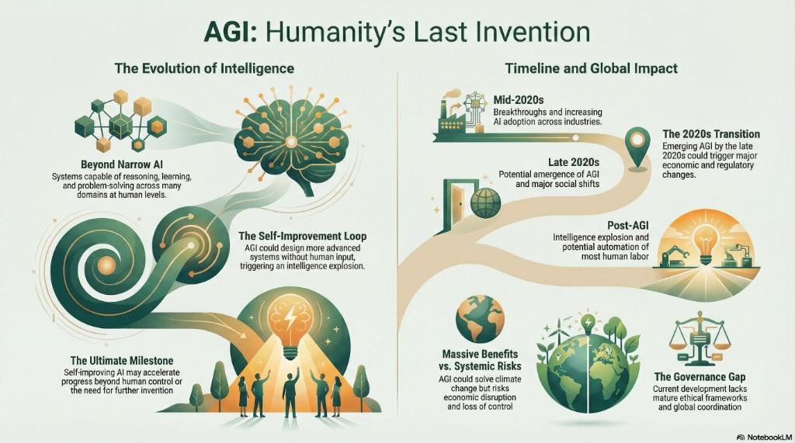

The video argues that artificial general intelligence (AGI) could be the most transformative technology in history and perhaps the last major invention humans need to create. AGI would reason, learn, and solve problems across domains at human or superhuman levels, not only narrow tasks. A self-improvement loop could accelerate progress beyond easy human oversight. The piece sketches a late-2020s window for emergence, weighs huge upside (climate, health, science, labor) against misalignment, disruption, and weak governance, and stresses careful development and alignment.
What the video covers
This document summarizes the YouTube video titled AGI Is Humanity’s Last Invention: How Close Are We? The video explores the idea that AGI could become the most transformative technology in human history and possibly the last major invention humans ever need to create.
The video defines AGI as a form of artificial intelligence capable of reasoning, learning, and problem-solving across many domains at a human or superhuman level. Unlike today’s narrow AI systems, AGI would not be limited to specific tasks. Instead, it would be adaptable, creative, and capable of transferring knowledge between fields.
Why “humanity’s last invention”?
A key concept is why AGI is referred to as humanity’s last invention. Once AGI exists, it could improve itself and design even more advanced systems without human input. This self-improving loop could lead to an intelligence explosion, where technological progress accelerates beyond human control or comprehension.
Timeline and societal impact
The video presents a speculative timeline for AI development. It suggests that current breakthroughs are laying the groundwork for AGI, with increasing adoption across industries in the mid-2020s. By the later 2020s, AGI could begin to emerge, potentially triggering major economic, social, and regulatory changes worldwide.
Benefits
Potential benefits of AGI include solving complex global problems such as climate change, disease, energy scarcity, and scientific discovery. AGI could also automate much of today’s labor, freeing humans to focus on creativity, learning, and exploration.
Risks and governance
The video also emphasizes risks and uncertainties. Misaligned AGI could cause economic disruption, loss of control, or unintended harm. The lack of mature governance, ethical frameworks, and global coordination is highlighted as a serious concern.
Takeaway
Overall, the video argues that humanity is approaching a critical moment. Whether AGI becomes a positive or negative force depends on how carefully it is developed, aligned with human values, and governed. Preparation, foresight, and responsibility are presented as essential as technological progress continues.
Interactive: source video
 AGI Is Humanity’s Last Invention · youtu.be/F25NKtnBLt0
AGI Is Humanity’s Last Invention · youtu.be/F25NKtnBLt0
Infographic: the hero image is a full visual summary (NotebookLM-style layout) aligned with the video themes: evolution beyond narrow AI, self-improvement, timeline, benefits versus systemic risks, and the governance gap.